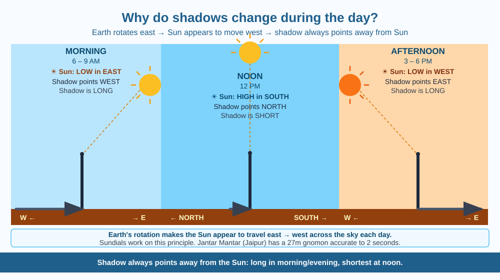

By the end of this lesson, you should be able to explain why shadows change length and direction throughout the day, describe the Sun's apparent path across the sky, and predict the direction of a shadow at a given time in India.
In the morning, your shadow stretches far to the west and could be several metres long. By noon, it shrinks to almost nothing and points north. By late afternoon, it stretches far to the east again. The object casting the shadow has not changed. What is causing this — and how did ancient people use shadows as clocks?
The Earth rotates, not the Sun. The Earth spins on its axis from west to east, completing one full rotation every 24 hours. Because we are on the rotating Earth, the Sun appears to move across the sky from east to west — but it is we who are moving, not the Sun.
Shadows always point away from the light source. When sunlight strikes an opaque object (a tree, a building, a person), the object blocks the light and casts a shadow on the side opposite the Sun. So the shadow always points directly away from the Sun.
In the morning: The Sun is low in the east. Light arrives at a shallow angle — almost horizontally. Shadows therefore stretch far in the opposite direction: long, pointing west. The shallower the angle, the longer the shadow.
At noon: The Sun is at its highest point in the sky, roughly due south (in India and across the Northern Hemisphere). The light strikes from above at a steeper angle. Shadows are shortest and point due north. At certain latitudes near the equator on specific dates, the Sun passes directly overhead at noon and there are no shadows at all.
In the afternoon: The Sun is descending toward the west. Light again arrives at a shallow angle from the west, so shadows point east and lengthen as sunset approaches.
Why India's noon shadows point north: India lies north of the equator, between about 8° and 37° latitude. The Sun's apparent path across the sky is always somewhat to the south. So shadows at noon always point toward the north — away from the southward Sun.
Shadow length depends on the Sun's elevation angle. The higher the Sun in the sky, the shorter the shadow. A person 1.5 metres tall casts a very long shadow when the Sun is 10° above the horizon, but only a 0.35 m shadow when the Sun is 77° above the horizon.
Think of the Sun as a torch held at different heights as you walk around a room: - Torch near the floor (low angle = morning/evening): Object blocks lots of floor space → long shadow - Torch above the object (high angle = noon): Object blocks only directly beneath → short shadow
As the Earth rotates, the Sun's effective position in the sky (its elevation angle) changes continuously from sunrise to noon to sunset — and so shadow length and direction change correspondingly.
The included SVG shows a single tree (vertical line) in the centre, with three Sun positions and their corresponding shadows:
Ground line shown across the canvas. Arrows from Sun positions to the tree indicate light direction; shadow lines point opposite.

On 21 June (summer solstice), the Sun is highest in the sky at noon for locations in the Northern Hemisphere. On 22 December (winter solstice), it is lowest. This means noon shadows are shortest on 21 June and longest on 22 December — even though it is midday on both occasions.
Predict: A student in Thiruvananthapuram (near the southern tip of India, latitude ≈ 8.5°N) goes outside at noon on 21 June. Would her shadow be shorter, longer, or similar in length compared to a student doing the same thing in Leh, Ladakh (latitude ≈ 34°N)? Explain using the concept of Sun elevation angle.
What is the main reason shadows change length and direction during the day?
Why is understanding Earth's rotation more useful than just observing that shadows move?
If you measured the length of your shadow at noon and again at 4 PM, what would you predict?
Design a simple sundial for your school playground. Describe where you would place the upright stick (gnomon), which direction it should face, and how you would mark the hour lines. Explain why the gnomon must be tilted to point toward the north celestial pole (aligned with Earth's axis) for accurate time-keeping, rather than simply standing vertically.
Ancient Indian astronomers (Aryabhata in the 5th century CE) correctly deduced that the Earth rotates on its axis — explaining the apparent movement of the Sun across the sky — over a thousand years before Copernicus made the same argument in Europe. This understanding was embedded in the design of astronomical observatories called Jantar Mantar, where enormous stone structures served as shadow-clocks accurate to within two seconds.
Earth's rotation shifts the Sun's angle across the sky — shadows always point away from the Sun, so they rotate direction and shorten at noon and lengthen near sunrise/sunset.